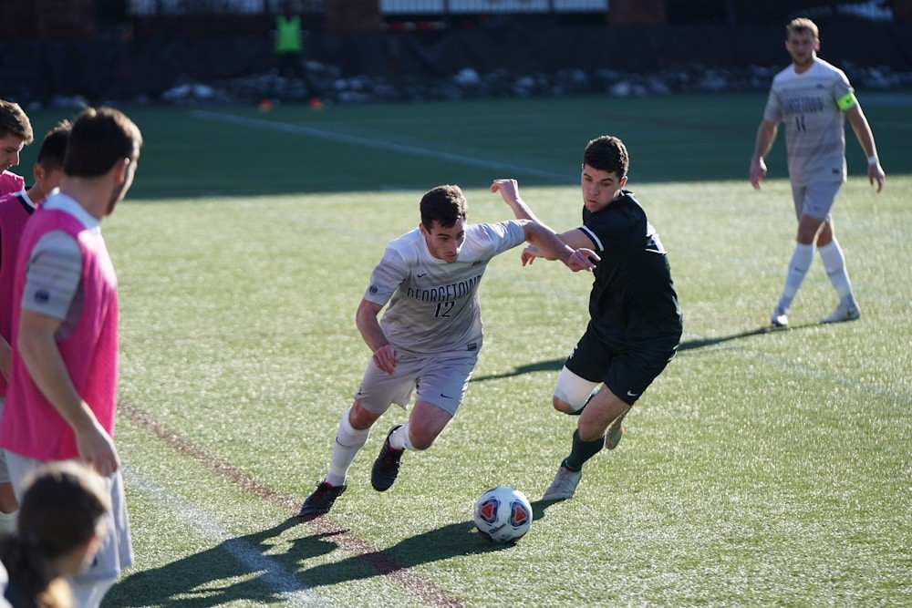

Від 1992 року до сьогодні
Українська ліга пройшла довгий шлях від першого чемпіонства "Таврії" до сучасного формату. Ми пам'ятаємо золоті часи, коли в чемпіонаті було 4-5 топ-клубів, що боролися за золото. Багато з них і сьогодні складають основу розділу клуби УПЛ, продовжуючи писати нову історію.
У цьому розділі ми будемо згадувати легендарні матчі та гравців, що стали іконами. Окрім історичних нарисів, ми також проводимо сучасну аналітику футболу, порівнюючи тактику минулого з нинішніми трендами. Ми віримо, що славетні часи повернуться!
